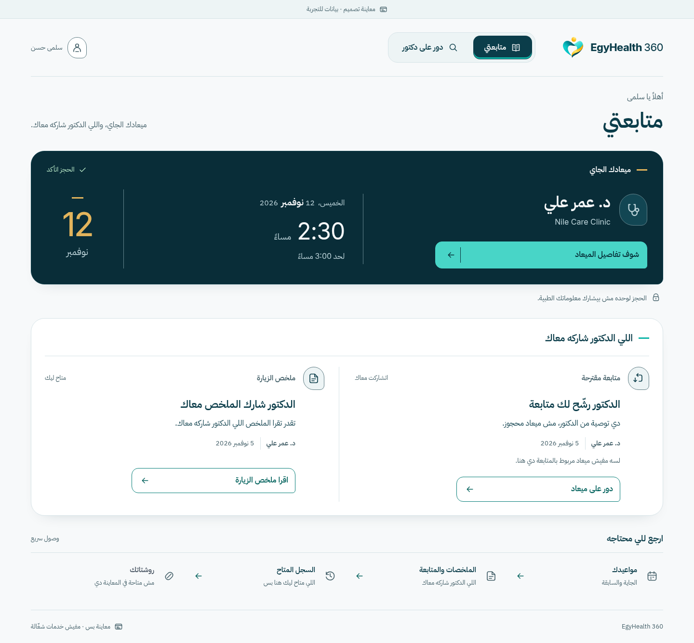
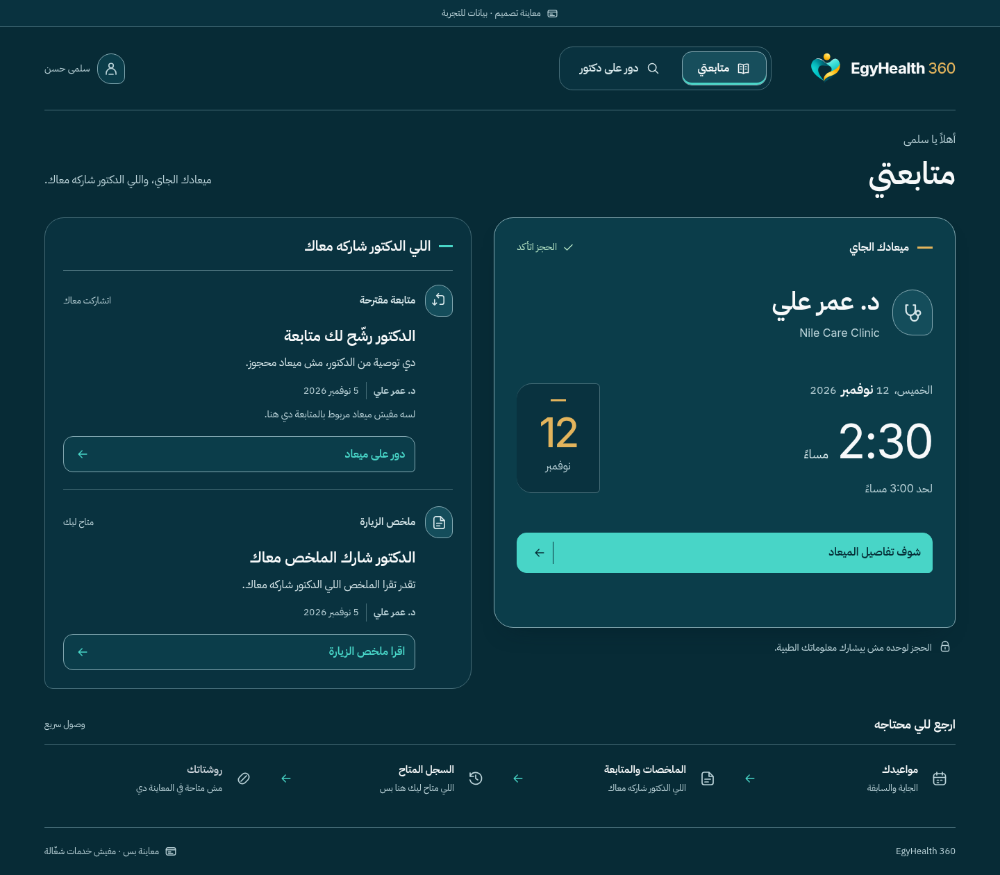
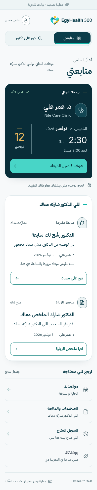
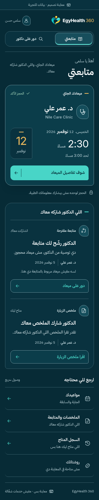
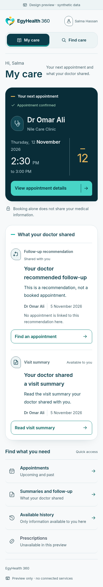
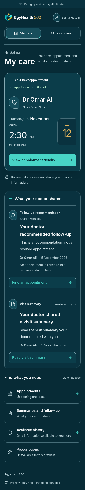
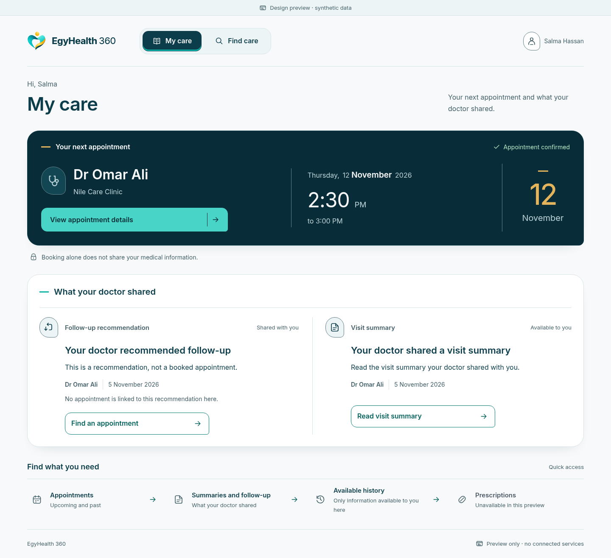
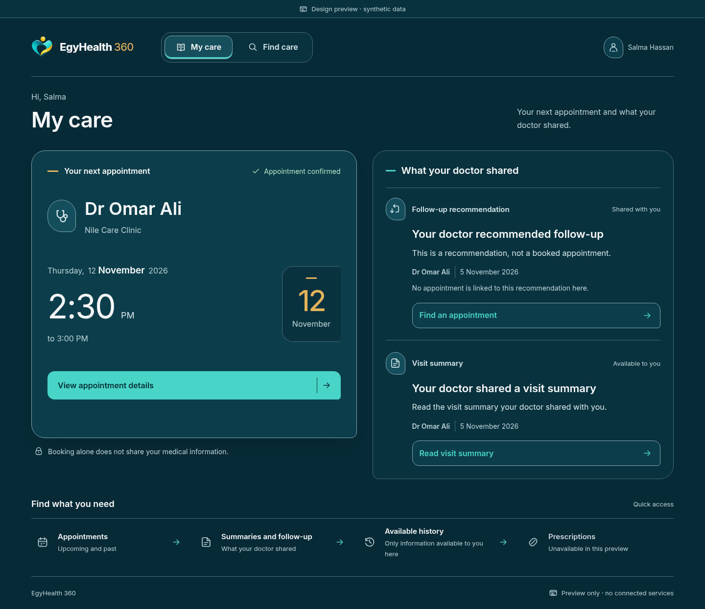

ONE BRAND · TWO ART-DIRECTION REFERENCES · OWNER DECISION PENDING
Recovering NOVA's dark-first character.
PR #98 Light-first and the proposed Dark-first treatment share the same selected logo, typography, icon vocabulary, synthetic facts and clinical meanings. This board compares actual full-page browser captures at equal scale within each pair.
Arabic RTL · desktop · native 1440px captures
Full-width horizontal appointment and following light source plane versus a sustained appointment stage beside an independent dark source rail.
PR #98 · Light-first reference
Dark-first · proposed refinement
Arabic RTL & English LTR · mobile · native 390px captures
Same appointment-first mobile reading order. Shared sources remain independently labelled, attributed and actionable on related dark surfaces.
AR · #98 Light-first
AR · proposed Dark-first
EN · #98 Light-first
EN · proposed Dark-first
English LTR · desktop · native 1440px captures
PR #98 · Light-first reference
Dark-first · proposed refinement